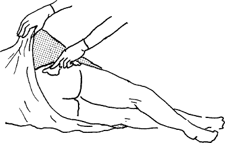

{% set pagetitle = "How to inject medicines
into muscle" %}
{% set seq_length = 7 %}
{% set seq_position = 5 %}
{% set seq_llink = "How_to_inject_medicines_into_muscle4.html" %} ## set rlink equal to next page href
{% set seq_rlink = "How_to_inject_medicines_into_muscle6.html" %} ## set llink equal to previous page href
{% extends "templates.jinja/base.page-with-sequence.html" %}
{% block title %} Hesperian - Pregnancy & Birth{% endblock %}
{% block id %}How_to_inject_medicines_into_muscle5{% endblock %}
{% block content %}
- 6. Clean the skin with soap and water or with alcohol. Let it dry.

{% endblock %}
{% block footer %}
{% endblock %}